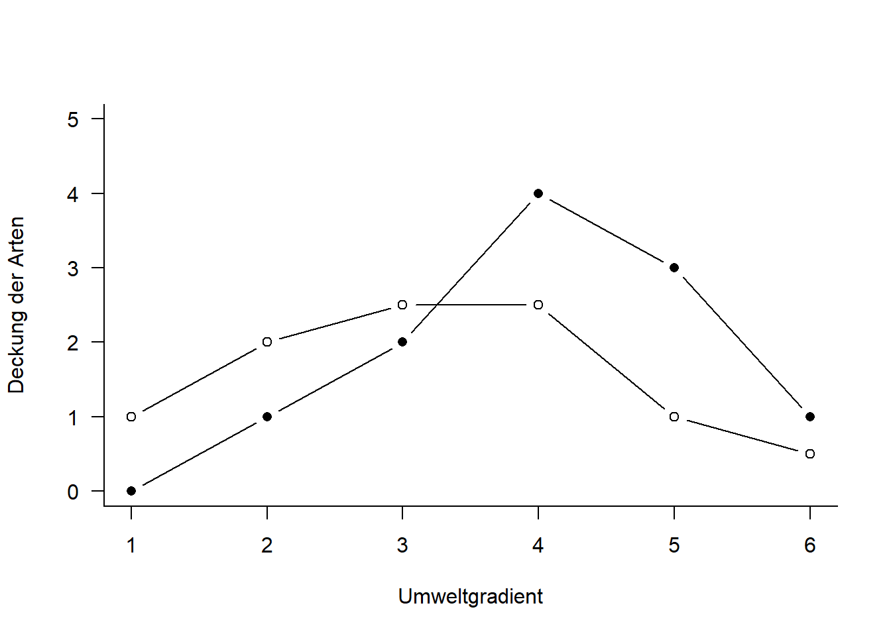
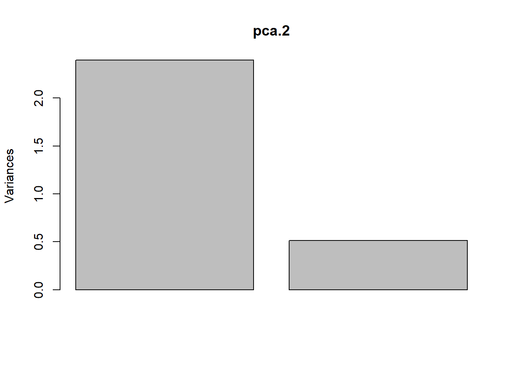
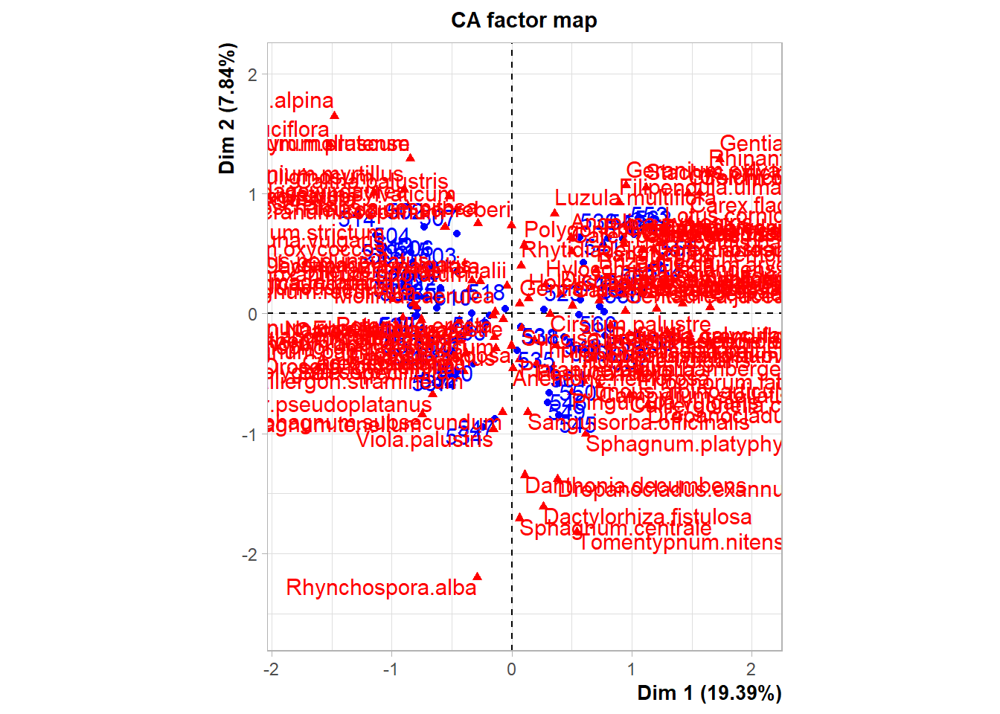
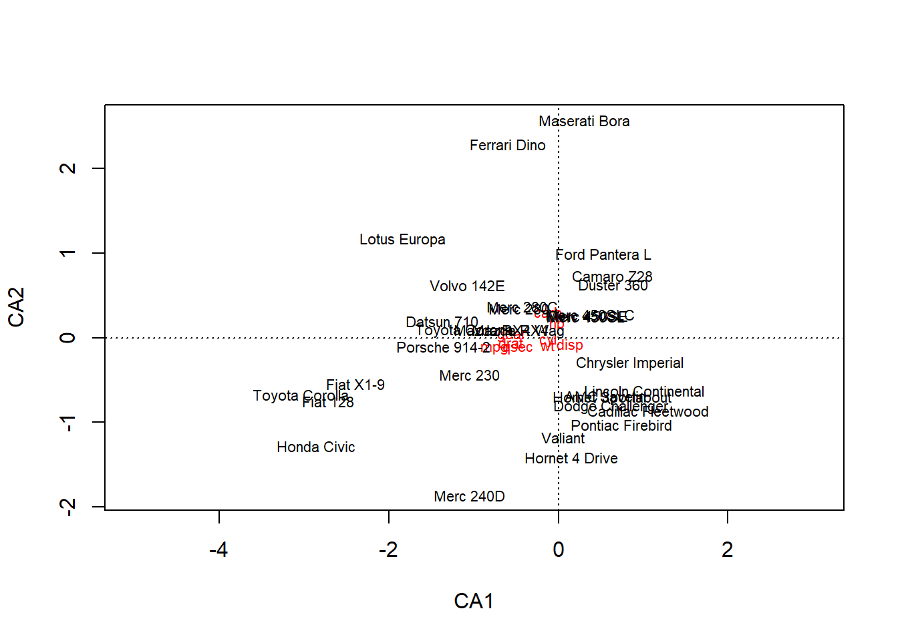

StatKons2: Demo
- Download R-Skript
PCA mit sveg
#Mit Beispieldaten aus Wildi (2013, 2017)
library(labdsv)
library(dave) # lade package für Daten sveg
head(sveg)
str(sveg)
#View(sveg)
#PCA-----------
#Deckungen Wurzeltransformiert, cor=T erzwingt Nutzung der Korrelationsmatrix
o.pca <- labdsv::pca(sveg^0.25,cor=T)
o.pca2 <- stats::prcomp(sveg^0.25)
#Koordinaten im Ordinationsraum => Y
head(o.pca$scores)
head(o.pca2$x)
#Korrelationen der Variablen mit den Ordinationsachsen
head(o.pca$loadings)
head(o.pca2$rotation)
#Erklaerte Varianz der Achsen (sdev ist die Wurzel daraus)
# früher gabs den Befehl summary()
# jetzt von hand: standardabweichung im quadrat/totale varianz * 100 (um prozentwerte zu bekommen)
E<-o.pca$sdev^2/o.pca$totdev*100
E[1:5] # erste fünf PCA
#package stats funktioniert summary()
summary(o.pca2)
#PCA-Plot der Lage der Beobachtungen im Ordinationsraum
plot(o.pca$scores[,1],o.pca$scores[,2], type="n", asp=1, xlab="PC1", ylab="PC2")
points(o.pca$scores[,1],o.pca$scores[,2],pch=18)
plot(o.pca$scores[,1],o.pca$scores[,3],type="n", asp=1, xlab="PC1", ylab="PC3")
points(o.pca$scores[,1],o.pca$scores[,3],pch=18)
#Subjektive Auswahl von Arten zur Darstellung
sel.sp <- c(3,11,23,39,46,72,77,96, 101, 119)
snames <- names(sveg[ , sel.sp])
snames
#PCA-Plot der Korrelationen der Variablen (hier Arten) mit den Achsen
#(hier reduction der observationen)
x <- o.pca$loadings[,1]
y <- o.pca$loadings[,2]
plot(x,y,type="n",asp=1)
arrows(0,0,x[sel.sp],y[sel.sp],length=0.08)
text(x[sel.sp],y[sel.sp],snames,pos=1,cex=0.6)
# hier gehts noch zu weiteren Beispielen zu PCA's:
# https://stats.stackexchange.com/questions/102882/steps-done-in-factor-analysis-compared-to-steps-done-in-pca/102999#102999
# https://stats.stackexchange.com/questions/222/what-are-principal-component-scores
# https://stats.stackexchange.com/questions/102882/steps-done-in-factor-analysis-compared-to-steps-done-in-pca/102999#102999

PCA mit Beispiel aus Skript
#Idee von Ordinationen aus Wildi p. 73-74
#Für Ordinationen benötigen wir Matrizen, nicht Data.frames
#Generieren von Daten
raw <- matrix(c(1,2,2.5,2.5,1,0.5,0,1,2,4,3,1), nrow=6)
colnames(raw) <- c("spec.1", "spec.2")
rownames(raw) <- c("r1","r2","r3","r4","r5","r6")
raw
#originale Daten im zweidimensionalen Raum
x1 <- raw[,1]
y1 <- raw[,2]
z <- c(rep(1:6))
#Plot Abhängigkeit der Arten vom Umweltgradienten
plot(c(x1, y1)~c(z,z), type="n", axes=T, bty="l", las=1, xlim=c(1,6), ylim=c(0,5),
xlab="Umweltgradient",ylab="Deckung der Arten")
points(x1~z, pch=21, type="b")
points(y1~z, pch=16, type="b")
#zentrierte Daten
cent <- scale(raw, scale=F)
x2 <- cent[,1]
y2 <- cent[,2]
#rotierte Daten
o.pca <- pca(raw)
x3 <- o.pca$scores[,1]
y3 <- o.pca$scores[,2]
#Visualisierung der Schritte im Ordinationsraum
plot(c(y1,y2,y3)~c(x1,x2,x3), type="n", axes=T, bty="l", las=1, xlim=c(-4,4),
ylim=c(-4,4), xlab="Art 1", ylab="Art 2")
points(y1~x1, pch=21, type="b", col="green", lwd=2)
points(y2~x2, pch=16, type="b",col="red", lwd=2)
points(y3~x3, pch=17, type="b", col="blue", lwd=2)
#zusammengefasst:-------
#Durchführung der PCA
pca <- pca(raw)
#Koordinaten im Ordinationsraum
pca$scores
#Korrelationen der Variablen mit den Ordinationsachsen
pca$loadings
#Erklärte Varianz der Achsen in Prozent
E <- pca$sdev^2/pca$totdev*100
E
### excurs für weitere r-packages####
#mit prcomp, ein weiteres Package für Ordinationen
pca.2 <- stats::prcomp(raw, scale=F)
summary(pca.2)
plot(pca.2)
biplot(pca.2)
#mit vegan, ein anderes Package für Ordinationen
pca.3 <- vegan::rda(raw, scale=FALSE) #Die Funktion rda führt ein PCA aus an wenn nicht Umwelt- und Artdaten definiert werden
#scores(pca.3,display=c("sites"))
#scores(pca.3,display=c("species"))
summary(pca.3, axes=0)
biplot(pca.3, scaling=2)
biplot(pca.3, scaling="species")#scaling=species macht das selbe wie scaling=2


CA mit sveg
library(vegan)
library(dave) #for the dataset sveg
library(FactoMineR)# siehe Beispiel hier: https://www.youtube.com/watch?v=vP4korRby0Q
## Error: package or namespace load failed for 'FactoMineR' in loadNamespace(i, c(lib.loc, .libPaths()), versionCheck = vI[[i]]):
## namespace 'rlang' 1.0.5 is already loaded, but >= 1.0.6 is required
# ebenfalls mit transformierten daten
o.ca<-cca(sveg^0.5) #package vegan
o.ca1 <- CA(sveg^0.5) #package FactoMineR
## Error in CA(sveg^0.5): could not find function "CA"
#Arten (o) und Communities (+) plotten
plot(o.ca)
summary(o.ca1)
## Error in summary(o.ca1): object 'o.ca1' not found
#Nur Arten plotten
x<-o.ca$CA$u[,1]
y<-o.ca$CA$u[,2]
plot(x,y)
#Anteilige Varianz, die durch die ersten beiden Achsen erklaert wird
o.ca$CA$eig[1:63]/sum(o.ca$CA$eig)

NMDS mit sveg
#NMDS----------
#Distanzmatrix als Start erzeugen
library(MASS)
library(vegan)
mde <-vegdist(sveg,method="euclidean")
mdm <-vegdist(sveg,method="manhattan")
#Zwei verschiedene NMDS-Methoden
set.seed(1) #macht man, wenn man bei einer Wiederholung exakt die gleichen Ergebnisse will
o.imds<-isoMDS(mde, k=2) # mit K = Dimensionen
set.seed(1)
o.mmds<-metaMDS(mde,k=3) # scheint nicht mit 2 Dimensionen zu konvergieren
plot(o.imds$points)
plot(o.mmds$points)
#Stress = Abweichung der zweidimensionalen NMDS-Loesung von der originalen Distanzmatrix
stressplot(o.imds,mde)
stressplot(o.mmds,mde)PCA mit mtcars
#Beispiel inspiriert von Luke Hayden: https://www.datacamp.com/community/tutorials/pca-analysis-r
#Ausgangslage: viel zusammenhängende Variablen
#Ziel: Reduktion der Variablenkomplexität
#WICHTIG hier: Datenformat muss Wide sein! Damit die Matrixmultiplikation gemacht werden kann
# lade Datei
cars <- mtcars
# Korrelationen
cor<- cor(cars[,c(1:7,10,11)])
cor[abs(cor)<.7] <- 0
cor
#definiere Datei für PCA
cars <- mtcars[,c(1:7,10,11)]
# pca
# achtung unterschiedliche messeinheiten, wichtig es muss noch einheitlich transfomiert werden
library(FactoMineR) # siehe Beispiel hier: https://www.youtube.com/watch?v=vP4korRby0Q
## Error: package or namespace load failed for 'FactoMineR' in loadNamespace(i, c(lib.loc, .libPaths()), versionCheck = vI[[i]]):
## namespace 'rlang' 1.0.5 is already loaded, but >= 1.0.6 is required
o.pca <- PCA(cars, scale.unit = TRUE) # entweder korrelations oder covarianzmatrix
## Error in PCA(cars, scale.unit = TRUE): could not find function "PCA"
# schaue output an
summary(o.pca) # generiert auch automatische plotsCA mit mtcars
library(vegan)
# ebenfalls mit transformierten daten
o.ca<-vegan::cca(cars)
o.ca1 <- FactoMineR::CA(cars) #blau: auots, rot: variablen
## Error in loadNamespace(i, c(lib.loc, .libPaths()), versionCheck = vI[[i]]): namespace 'rlang' 1.0.5 is already loaded, but >= 1.0.6 is required
# plotten (schwarz: autos, rot: variablen)
plot(o.ca)
summary(o.ca)
summary(o.ca1)
## Error in summary(o.ca1): object 'o.ca1' not found
#Nur autos plotten; wieso?
x<-o.ca$CA$u[,1]
y<-o.ca$CA$u[,2]
plot(x,y)
#Anteilige Varianz, die durch die ersten beiden Achsen erklaert wird
o.ca$CA$eig[1:8]/sum(o.ca$CA$eig)

NMDS mit mtcars
#Distanzmatrix als Start erzeugen
library(MASS)
mde <-vegan::vegdist(cars,method="euclidean")
mdm <-vegan::vegdist(cars,method="manhattan")
#Zwei verschiedene NMDS-Methoden
set.seed(1) #macht man, wenn man bei einer Wiederholung exakt die gleichen Ergebnisse will
o.mde.mass <- MASS::isoMDS(mde, k=2) # mit K = Dimensionen
o.mdm.mass <- MASS::isoMDS(mdm)
set.seed(1)
o.mde.vegan <- vegan::metaMDS(mde,k=1) # scheint nicht mit 2 Dimensionen zu konvergieren
o.mdm.vegan <- vegan::metaMDS(mdm, k = 2)
#plot euclidean distance
plot(o.mde.mass$points)
plot(o.mde.vegan$points)
#plot manhattan distance
plot(o.mdm.mass$points)
plot(o.mdm.vegan$points)
#Stress = Abweichung der zweidimensionalen NMDS-Loesung von der originalen Distanzmatrix
vegan::stressplot(o.mde.vegan, mde)
vegan::stressplot(o.mde.mass, mde)